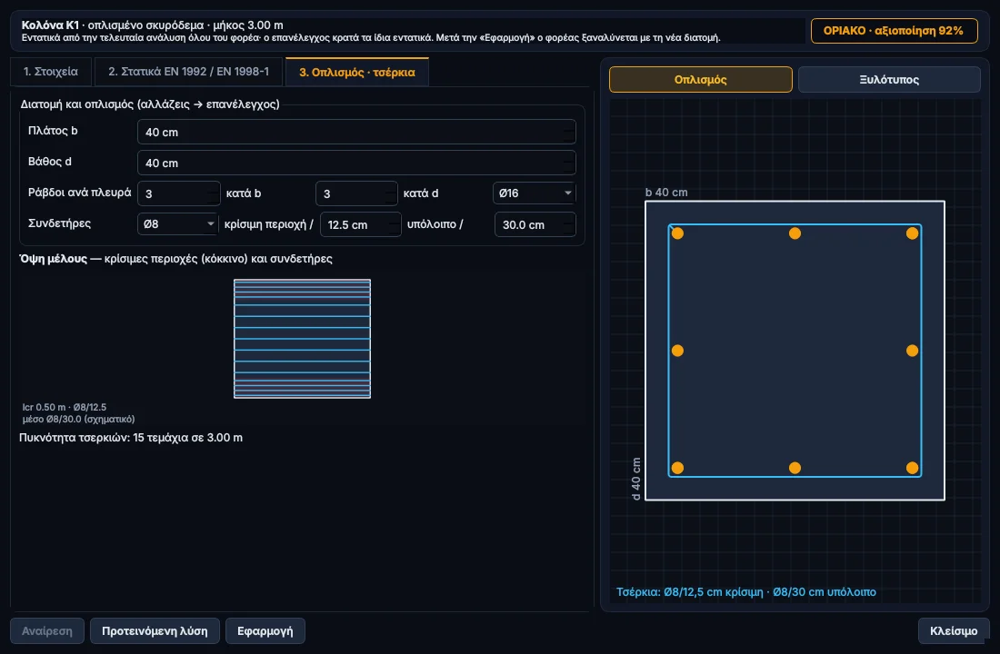
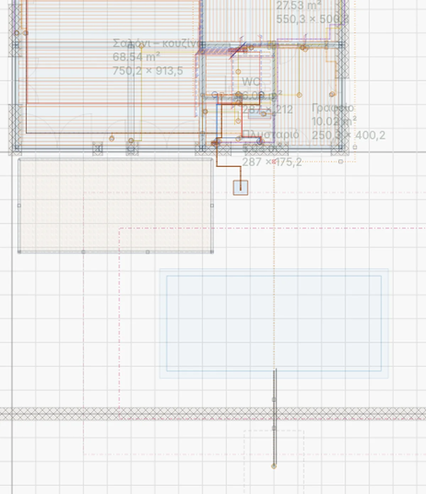
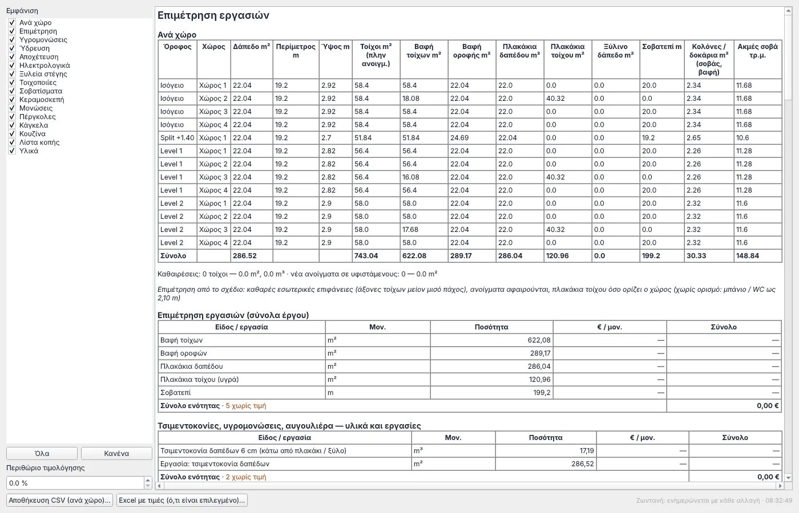
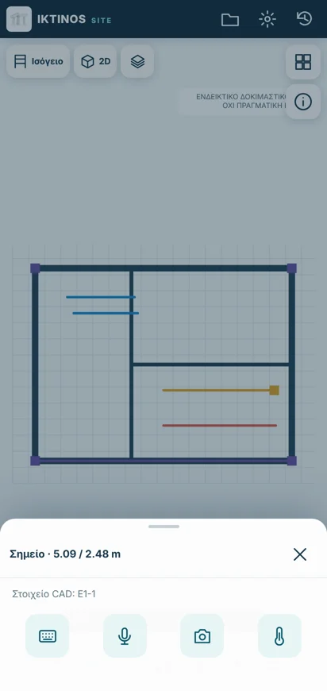

IKTINOS
IKTINOSΜια γραμμή σε έναν ελαιώνα. Ένα κτίριο, ως τον τελευταίο σωλήνα.
ΑΠΟ ΤΟ ΒΙΝΤΕΟ ΤΟΥ IKTINOS · ΠΑΞΟΙ, CC0Από την κάτοψη στον ξυλότυπο, στα δίκτυα και στο εργοτάξιο.
Το IKTINOS κρατά ένα μοντέλο για όλο το κτίριο. Η κάτοψη, το 3D, ο φέρων οργανισμός κατά Ευρωκώδικα 8, τα Η/Μ και ο ενεργειακός έλεγχος διαβάζουν το ίδιο σχέδιο, και κάθε αλλαγή αναιρείται.
 3D · IKTINOS
3D · IKTINOS
Ο ίδιος έλεγχος σε κάθε έργο
Το IKTINOS ελέγχει κάθε έργο με τους ίδιους κανόνες και δείχνει το πρόβλημα στην κάτοψη. Οι τιμές είναι μετά την εντολή «Υπολογισμός φέροντα».
| Έλεγχος | S12 βίλα | S13 θόλος | S14 γραφεία |
|---|---|---|---|
| Κόμβοι ΣMRc / ΣMRb ≥ 1,30, και στην κορυφή | 51 / 51 · ελάχ. 1,33 | 66 / 66 · ελάχ. 1,30 | 32 / 32 · ελάχ. 1,31 |
| Ύδρευση: κρύο και ζεστό σε ένα δίκτυο | ναι | ναι | ναι |
| Αποθήκευση → κλείσιμο → άνοιγμα χωρίς απώλειες | ναι | ναι | ναι |
Ένα σπίτι από το μηδέν, με τη σειρά της οικοδομής
| Εργασία | Πού στο πρόγραμμα | Κανόνας · πηγή | Στάδιο |
|---|---|---|---|
| Πέτρα εμφανής έξω, σοβάς μόνο μέσα· με ή χωρίς σοβά, με ή χωρίς θερμομόνωση — το πάχος του τοίχου αλλάζει μαζί. | Τοίχος ▾ ▸ Είδος τοίχου ▸ ＋ Νέα σύνθεση | λ ανά στρώση από ΤΟΤΕΕ 20701-2 | Διαθέσιμο |
| Ο τύπος διαλέγεται πριν· περίγραμμα με συνεχόμενα κλικ, εσωτερικοί τούβλο 13 cm χωρίς να ξαναλλάξεις. | Τοίχος ▾ ▸ Είδος τοίχου | — | Διαθέσιμο |
| Εξώπορτα, εσωτερικές πόρτες, παράθυρα με κλικ πάνω στον τοίχο· υλικό κουφώματος και υαλοπίνακας σε υπομενού. | Κατασκευή ▸ Ανοίγματα | υαλοπίνακες ΤΟΤΕΕ 20701-1 | Διαθέσιμο |
| Πλάκα, δάπεδα, οροφές, δώμα με μία εντολή και μία αναίρεση. Επιλέγετε εσείς, ο Βοηθός βοηθά· η σύνδεση με AI δεν είναι υποχρεωτική. | Έργο ▸ Ολοκλήρωση κτιρίου… | τοπικοί κανόνες του IKTINOS | Διαθέσιμο |
| Οι εξωτερικοί τοίχοι ανεβαίνουν· δύο δωμάτια, μπαλκόνι, πέργκολα ξύλινη. Η στέγη ανεβαίνει στην κορυφή του νέου ορόφου. | Έργο ▸ Όροφοι ▸ Όροφος | — | Διαθέσιμο |
| Η σκάλα ακολουθεί τον κέρσορα πριν τοποθετηθεί: τύπος, ρίχτια, ύψος φαίνονται πριν το κλικ. | Κατασκευή ▸ Σκάλα·Ράμπα ▸ Σκάλα | — | Διαθέσιμο |
| Δεύτερη Ολοκλήρωση με κεραμοσκεπή· ξυλεία και μονώσεις στέγης από τις Ιδιότητες. | Έργο ▸ Ολοκλήρωση κτιρίου… | — | Διαθέσιμο |
| Θόλος με κλικ στο κέντρο ή πάνω σε άλλους θόλους· σκελετός V1–V8 από τις Ιδιότητες του θόλου, κέλυφος από γυαλί. | Κατασκευή ▸ Κέλυφος ▸ Θόλοι Bio-Spectre | γεωδαιτική σφαίρα κλάσης I (εικοσάεδρο) | Διαθέσιμο |
Καταγραφή του πραγματικού προγράμματος· το χρονόμετρο μετρά τον χρόνο του προγράμματος. Κλικ σε εργασία = το βίντεο πηγαίνει εκεί.
Τι κάνει μόνο του, τι αλλάζει ο μηχανικός

| Εργασία | Πού στο πρόγραμμα | Κανόνας · πηγή | Στάδιο |
|---|---|---|---|
| Κολόνες, δοκάρια, βάσεις από τους τοίχους, με μία εντολή. | Κατασκευή ▸ Φέρων οργανισμός ▸ Υπολογισμός φέροντα | EN 1998-1 + ελληνικό παράρτημα | Διαθέσιμο |
| N, V, M ανά συνδυασμό· μπάρες εκμετάλλευσης σε κάμψη, τέμνουσα, βέλος, λυγηρότητα. | Ιδιότητες κολόνας / δοκού ▸ Λεπτομέρειες / Ανάλυση | EN 1992-1-1 | Διαθέσιμο |
| Ράβδοι ανά πλευρά, πυκνότητα στην κρίσιμη περιοχή· περιμετρικό, διπλό, «Η», ρόμβος — τα σκέλη μετρούν στη διάτμηση. | Στατικά μέλους ▸ Οπλισμός | EN 1992-1-1 §9.2.2 | Διαθέσιμο |
| Ο μηχανικός αλλάζει μεγέθη και ράβδους· ο έλεγχος ξανατρέχει αμέσως, «Εφαρμογή» με μία αναίρεση. | Κατασκευή ▸ Φέρων οργανισμός ▸ Διατομές | — | Διαθέσιμο |
| Ικανοτικός έλεγχος κόμβων ΣMRc ≥ 1,30·ΣMRb, και στην κορυφή· φύλλο ξυλοτύπου σε PDF. | Στατική ανάλυση φέροντος οργανισμού… · δεξί κλικ ▸ Φύλλο ξυλοτύπου (PDF) | EN 1998-1 §4.4.2.3 | Διαθέσιμο |
| Πρόσθετος οπλισμός με υπολογισμόΚολόνα: ράβδοι επιπλέον· δοκός: πάνω στη στήριξη, κάτω στο άνοιγμα, με μήκος. | Στατικά μέλους ▸ Οπλισμός | EN 1992-1-1 | Σε εξέλιξη |
| Κόμβοι και ανάλυση φορτίων στο ίδιο παράθυροΩς υπομενού του «Στατικά μέλους». | Στατικά μέλους | — | Επόμενο στάδιο |
| Λοξός άξοναςΚολόνα στραμμένη κατά θ, τοπικοί άξονες u / v, δοκοί υπό γωνία· η ανάλυση ήδη διαβάζει τη στροφή. | Ιδιότητες κολόνας | — | Επόμενο στάδιο |
Ύδρευση και αποχέτευση πάνω στην κάτοψη

| Εργασία | Πού στο πρόγραμμα | Κανόνας · πηγή | Στάδιο |
|---|---|---|---|
| Υδραυλικά σημείαΛεκάνη, νιπτήρας, ντουζιέρα, μπανιέρα, νεροχύτης, πλυντήρια, θερμοσίφωνας ηλεκτρικός ή ηλιακός. | Μηχανολογικά ▸ Ύδρευση | — | Διαθέσιμο |
| Ύδρευση σε ένα δίκτυοΚρύο και ζεστό διαδρομολογούνται μαζί, ανά όροφο, από τις θέσεις των σημείων. | Μηχανολογικά ▸ Ύδρευση | προμελέτη διάταξης — όχι υδραυλικός υπολογισμός EN 806-3 | Διαθέσιμο |
| Αποχέτευση με κλίσηΚλάδοι Φ40 / 50 / 100 με κλίση 2 % προς τη στήλη· στήλη Φ100 ως 4 l/s, αλλιώς Φ125· σιφώνι, φρεάτιο. | Μηχανολογικά ▸ Αποχέτευση | EN 12056-2, σύστημα I | Διαθέσιμο |
| Συγκρούσεις και χιτώνιαΚλικ σε γραμμή = η κάτοψη με ζουμ και κόκκινο σημάδι εκεί που είναι. | Λίστες ▸ Συγκρούσεις / Χιτώνια | — | Διαθέσιμο |
| Πρόταση λύσης ανά σύγκρουσηΓια κάθε είδος σύγκρουσης, η λύση που προτείνεται. | Λίστες ▸ Συγκρούσεις | — | Επόμενο στάδιο |
| Επεξήγηση ανά σύνδεσηΔιάμετρος, κλίση και λόγος για κάθε σύνδεση του δικτύου. | Μηχανολογικά ▸ Αποχέτευση | EN 12056-2 | Επόμενο στάδιο |
Σημεία, κυκλώματα, πίνακες, παροχές

| Εργασία | Πού στο πρόγραμμα | Κανόνας · πηγή | Στάδιο |
|---|---|---|---|
| Σημεία και κυκλώματαΠρίζες, διακόπτες, ροοστάτες, διακόπτης μοτέρ· επαναρίθμηση κυκλωμάτων. | Ηλεκτρολογικά ▸ Ισχυρά·πίνακες | φωτισμός 10 A / 1,5 mm² ≤ 10 σημεία · πρίζες 16 A / 2,5 mm² ≤ 6 — ΕΛΟΤ HD 60364 | Διαθέσιμο |
| Πίνακες ανά όροφοΗλεκτρικός πίνακας, υποπίνακες ορόφων αυτόματα, χάρτης σωληνώσεων. | Ηλεκτρολογικά ▸ Ισχυρά·πίνακες | — | Διαθέσιμο |
| Παροχές εξοπλισμούΛέβητας, αντλία θερμότητας, μηχανοστάσιο πισίνας. | Ηλεκτρολογικά ▸ Παροχές | πισίνα: HD 60364-7-702 | Διαθέσιμο |
| ΑσθενήRJ45, TV / SAT, Wi-Fi οροφής, rack. | Ηλεκτρολογικά ▸ Ασθενή (δίκτυο·TV) | — | Διαθέσιμο |
| Σύστημα ελέγχου KNXΕπιλογή του πελάτη, προεπιλογή συμβατικό On/Off· με KNX οι διακόπτες γίνονται μπουτόν στο bus, φωτιστικά DALI-2 σε gateway. | καρτέλα «Ηλεκτρ. πίνακας» ▸ Σύστημα ελέγχου | KNX (EN 50090)· όρια bus προς έλεγχο από μηχανικό | Διαθέσιμο |
| Ανάλυση και κόστοςΣχέδιο και κόστος των ηλεκτρολογικών. | Ηλεκτρολογικά ▸ Ανάλυση ηλεκτρολογικών | — | Διαθέσιμο |
Ένταση και κατεύθυνση, ρυθμισμένα στο κτίριο

| Εργασία | Πού στο πρόγραμμα | Κανόνας · πηγή | Στάδιο |
|---|---|---|---|
| ΦωτιστικάΟροφής, χωνευτό, σποτ, απλίκα, wall washer, κρυφός με ταινία LED. | Ηλεκτρολογικά ▸ Φωτισμός | — | Διαθέσιμο |
| Ένταση και χρώμαΦωτεινή ροή (lm), θερμοκρασία (K), δέσμη, ροοστάτης. | Ιδιότητες φωτιστικού | μόνο από το φύλλο του κατασκευαστή — το πρόγραμμα δεν βάζει τυπικές τιμές | Διαθέσιμο |
| Κατεύθυνση σποτΚλίση και αζιμούθιο από το παράθυρο φωτισμού, όχι από το φωτιστικό· λίστα κατευθύνσεων για αντιγραφή. | Ηλεκτρολογικά ▸ Φωτισμός ▸ Φώτα του έργου | — | Διαθέσιμο |
| Φως ανά χώροΡύθμιση των φώτων του έργου ανά χώρο, στο 3D. | Ηλεκτρολογικά ▸ Φωτισμός ▸ Φώτα του έργου: ρύθμιση ανά χώρο… | όχι φωτοτεχνική μελέτη | Διαθέσιμο |
Ενδοδαπέδια, σώματα ή fan coil

| Εργασία | Πού στο πρόγραμμα | Κανόνας · πηγή | Στάδιο |
|---|---|---|---|
| Επιλογή συστήματοςΕνδοδαπέδια, καλοριφέρ ή fan coil· πηγή: λέβητας ή αντλία θερμότητας. | Μηχανολογικά ▸ Θέρμανση ▸ Σύστημα θέρμανσης | — | Διαθέσιμο |
| Σε κάθε χώρο, αυτόματαΣώματα ή fan coil σε κάθε χώρο· το fan coil και στην Ψύξη. | Μηχανολογικά ▸ Θέρμανση | — | Διαθέσιμο |
| ΕνδοδαπέδιαΒήμα βρόχων, συλλέκτες, βρόχοι ανά χώρο· μήκη από τη γεωμετρία. | Μηχανολογικά ▸ Θέρμανση ▸ Βήμα βρόχων ενδοδαπέδιας… | βήμα που δηλώνει ο χρήστης | Διαθέσιμο |
| ΔιανομήΔισωλήνιο με κλάδους ή συλλέκτες ανά όροφο. | Μηχανολογικά ▸ Θέρμανση ▸ Διανομή | — | Διαθέσιμο |
| Θερμοκρασίες και ενδεικτική ισχύςΘερμοκρασίες σχεδιασμού ανά έργο, ενδεικτική ισχύς. | Μηχανολογικά ▸ Θέρμανση | ενδεικτική — όχι μελέτη θέρμανσης EN 12831-1 | Διαθέσιμο |
| Ήλιος και άνεμοςΏρες ηλιασμού και σκίαση ανά κούφωμα, άνεμος της περιοχής, μπαλκόνια. | Σχέδια ▸ Ήλιος και άνεμος | — | Διαθέσιμο |
Οι επιλογές αλλάζουν, οι Ιδιότητες δίπλα

| Εργασία | Πού στο πρόγραμμα | Κανόνας · πηγή | Στάδιο |
|---|---|---|---|
| Διαλέγεις χώρο στην κάτοψη· το έργο δεν αλλάζει μέχρι την «Εφαρμογή». | Κουζίνα·ντουλάπα ▸ Κουζίνα·μπάνιο ▸ Στούντιο κουζίνας 3D… | — | Διαθέσιμο |
| Πορτάκια, χρώματα, πάγκος, μηχανισμοί, πλακάκι πίσω από τον πάγκο. | Στούντιο | — | Διαθέσιμο |
| Η κουζίνα ακολουθεί τα παράθυρα του χώρου· νησίδα με σκαμπό· εφαρμογή με μία αναίρεση. | Στούντιο | — | Διαθέσιμο |
| Στούντιο μπάνιουΗ ίδια ροή για το μπάνιο. | Κουζίνα·ντουλάπα ▸ Κουζίνα·μπάνιο ▸ Στούντιο μπάνιου 3D… | — | Διαθέσιμο |
| Η κουζίνα ως ομάδαΜετά την «Εφαρμογή» μετακινείται ολόκληρη· «Διάλυση» για να δουλέψεις κάθε κομμάτι — και για έπιπλα. | Στούντιο | — | Επόμενο στάδιο |
Υλικό από φωτογραφία, αρμοί, τρόπος τοποθέτησης

| Εργασία | Πού στο πρόγραμμα | Κανόνας · πηγή | Στάδιο |
|---|---|---|---|
| Βιβλιοθήκη υλικώνΜικρό παράθυρο δίπλα στο 3D: κατηγορίες, αναζήτηση, σε όλο τον τοίχο ή σε μία πλευρά. | Βιβλιοθήκη ▸ Υλικά ▸ Υλικό στο επιλεγμένο… | — | Διαθέσιμο |
| Υλικό από φωτογραφίαΠέτρα, ξύλο, πλακάκι από JPG / PNG με πραγματικό πλάτος και ύψος· ταξιδεύει μέσα στο έργο. | Επεξεργασία υλικού ▸ Εικόνα… | — | Διαθέσιμο |
| ΑρμοίΠάχος αρμού σε mm και χρώμα αρμού, μέγεθος πλακιδίου. | Επεξεργασία υλικού ▸ Με μοτίβο | — | Διαθέσιμο |
| Τρόπος τοποθέτησηςΣε κάνναβο, μισό (τούβλο), ένα τρίτο (σανίδες)· φορά 0° / 90°· αργολιθοδομή, λαξευτή, πολυγωνική, πλακοειδής πέτρα. | Επεξεργασία υλικού ▸ Μοτίβο · Μετατόπιση σειρών | — | Διαθέσιμο |
| ΞύλοΣανίδες με νερά ξύλου ή συνεχή νερά (επένδυση μελαμίνης). | Επεξεργασία υλικού ▸ Μοτίβο | — | Διαθέσιμο |
Κάτοψη και 3D μαζί, μονώσεις, υπάρχον και νέο

| Εργασία | Πού στο πρόγραμμα | Κανόνας · πηγή | Στάδιο |
|---|---|---|---|
| Ένα κουμπί δίπλα στα 2D / 3D: η αλλαγή στην κάτοψη φαίνεται αμέσως στο κτίριο. | κουμπί «2D + 3D μαζί» | — | Διαθέσιμο |
| Θερμομόνωση και στεγάνωση ανά κατηγορία, πάχος, m² από το σχέδιο. | Ενεργειακά ▸ Μονώσεις | λ από ΤΟΤΕΕ 20701-2 Πίν. 2 | Διαθέσιμο |
| Κάθε στοιχείο έχει φάση· τα υφιστάμενα δεν πιάνονται για μετακίνηση. | Έργο ▸ Φάσεις (υφιστάμενα·καθαίρεση·νέα) | — | Διαθέσιμο |
| Τσιμεντοκονία στις ΜονώσειςΓραμμή μόνο για ανάγνωση· η μέτρηση μένει στα Υλικά & εργασίες. | Ενεργειακά ▸ Μονώσεις | — | Σε εξέλιξη |
Εργασίες, υλικά, ποσά και σύνολο από το ίδιο σχέδιο

| Εργασία | Πού στο πρόγραμμα | Κανόνας · πηγή | Στάδιο |
|---|---|---|---|
| Επιμέτρηση εργασιώνΑνά χώρο, από το σχέδιο. | Σχέδια ▸ Επιμετρήσεις·τιμές ▸ Επιμέτρηση εργασιών | — | Διαθέσιμο |
| Υλικά ανά επάγγελμαΓια παραγγελία και προσφορά· λίστα υλικών με τιμές σε Excel. | Σχέδια ▸ Επιμετρήσεις·τιμές ▸ Υλικά τιμές ανά επάγγελμα | — | Διαθέσιμο |
| Τιμές και προσφοράΤιμή ανά μονάδα που δίνει ο χρήστης, σύνολο, PDF με κατόψεις και προσφορά. | Σχέδια ▸ Επιμετρήσεις·τιμές ▸ Τιμές προσφορά… | τιμές του χρήστη | Διαθέσιμο |
Παράδειγμα πίνακα — ποσά ΥΠΟΘΕΤΙΚΑ
| Εργασία | Υλικό | Ποσότητα | Μονάδα | € / μονάδα | € |
|---|---|---|---|---|---|
| Τοιχοποιία πέτρας 52 cm | πέτρα, κονίαμα | 120 | m² | 95 | 11.400 |
| Σοβάς εσωτερικός | ασβεστοτσιμεντοκονίαμα | 310 | m² | 14 | 4.340 |
| Θερμομόνωση δώματος | XPS 10 cm | 95 | m² | 22 | 2.090 |
| Τσιμεντοκονία δαπέδου 6 cm | τσιμεντοκονία | 140 | m² | 12 | 1.680 |
| Αποχέτευση | σωλήνες PVC Φ40–Φ100 | 48 | m | 18 | 864 |
| Σύνολο (υποθετικό) | 20.374 | ||||
Οι ποσότητες και οι τιμές του παραδείγματος είναι υποθετικές. Στο πρόγραμμα οι ποσότητες βγαίνουν από το σχέδιο και τις τιμές τις δίνετε εσείς.
Ένα μοντέλο για όλο το κτίριο — σε έκδοση beta

| Εργασία | Πού στο πρόγραμμα | Κανόνας · πηγή | Στάδιο |
|---|---|---|---|
| Ανταλλαγή IFCΕξαγωγή IFC για μηχανικούς (BIM)· εισαγωγή IFC με τοίχους, κουφώματα, ορόφους. | Σχέδια ▸ Εξαγωγή ▸ IFC · Έργο ▸ Εισαγωγή ▸ IFC | IFC4 | Διαθέσιμο |
| DXF και PDF μηχανικούΚατόψεις DXF ανά όροφο· σχέδιο μηχανικού (PDF / DXF) ως υπόβαθρο, τοίχοι από το υπόβαθρο, τοπογραφικό DXF. | Σχέδια ▸ Εξαγωγή ▸ DXF · Έργο ▸ Εισαγωγή | DXF · PDF | Διαθέσιμο |
Οι κανόνες και πώς ελέγχονται
| Κανονισμός | Τι καλύπτει | Πώς στηρίζεται και ελέγχεται |
|---|---|---|
| ΤΟΤΕΕ 20701-1 / -2 | λ υλικών, U στοιχείων, υαλοπίνακες | πίνακες της ΤΟΤΕΕ μέσα στον κώδικα, με τον πίνακα γραμμένο σε κάθε τιμή |
| ΚΕΝΑΚ | θερμομονωτική επάρκεια, ενεργειακό πιστοποιητικό | Ενεργειακά ▸ Θερμομονωτική επάρκεια / Ενεργειακό πιστοποιητικό· σύγκριση με πραγματική μελέτη |
| EN 1992-1-1 | κάμψη, τέμνουσα, βέλος, τσέρκια | Στατικά μέλους, ανά συνδυασμό |
| EN 1998-1 + ΕΘΠ | σεισμός, ικανοτικός έλεγχος κόμβων | ίδιος έλεγχος σε κάθε έργο (πίνακας «Πύλη ποιότητας») |
| EN 12056-2 | αποχέτευση: μονάδες εκροής, διάμετροι, κλίση | κάθε σωλήνας με την πηγή του |
| ΕΛΟΤ HD 60364 | κυκλώματα, πισίνα (-7-702) | κανόνες κυκλωμάτων του προγράμματος |
Προμελέτη: κάθε αποτέλεσμα ελέγχεται και υπογράφεται από αδειοδοτημένο μηχανικό. Πάνω από 3.800 αυτόματα τεστ τρέχουν σε κάθε αλλαγή του προγράμματος.
Σταδιακή ανάπτυξη του IKTINOS
| Στάδιο | Τι περιλαμβάνει | |
|---|---|---|
| 01 | Beta — σήμερα Διαθέσιμο | Ό,τι γράφει «Διαθέσιμο» στους πίνακες: Windows για το γραφείο, Android για το εργοτάξιο, ελληνικά και αγγλικά. |
| 02 | Δοκιμή από μηχανικούς Σε εξέλιξη | Μηχανικοί δουλεύουν πραγματικά έργα και συγκρίνουμε με τις μελέτες τους· ό,τι γράφει «Σε εξέλιξη». |
| 03 | Επόμενα εργαλεία Επόμενο στάδιο | Ό,τι γράφει «Επόμενο στάδιο», με τη σειρά που ζητούν οι χρήστες. |
| 04 | Κυκλοφορία Επόμενο στάδιο | Όλο το πακέτο — αρχιτεκτονικά, στατικά, Η/Μ, ενέργεια, εργοτάξιο — σε μία ανταγωνιστική τιμή. |
Το IKTINOS είναι σε έκδοση beta, υπό ανάπτυξη. Αν ενδιαφέρεστε για δοκιμή, ενημερώστε μας — φόρμα πιο κάτω.
Το έργο στο εργοτάξιο, στο κινητό
Η εφαρμογή εργοταξίου του IKTINOS. Το γραφείο στέλνει το κτίριο μόνο για ανάγνωση· το κινητό δεν αλλάζει ποτέ το σχέδιο, στέλνει παρατηρήσεις.



Σχεδιασμένο στην Ελλάδα, για ελληνικά έργα
Η έκδοση δοκιμής είναι η τρέχουσα έκδοση ανάπτυξης. Χρησιμοποίησέ τη μαζί με το πρόγραμμα που ήδη έχεις και έλεγξε κάθε αποτέλεσμα πριν το καταθέσεις.
- Περιβάλλον στα ελληνικά και στα αγγλικά.
- 14 δείγματα έργων, ή τα σχέδιά σου σε PDF / DXF.
- Windows για το γραφείο, Android για το εργοτάξιο.